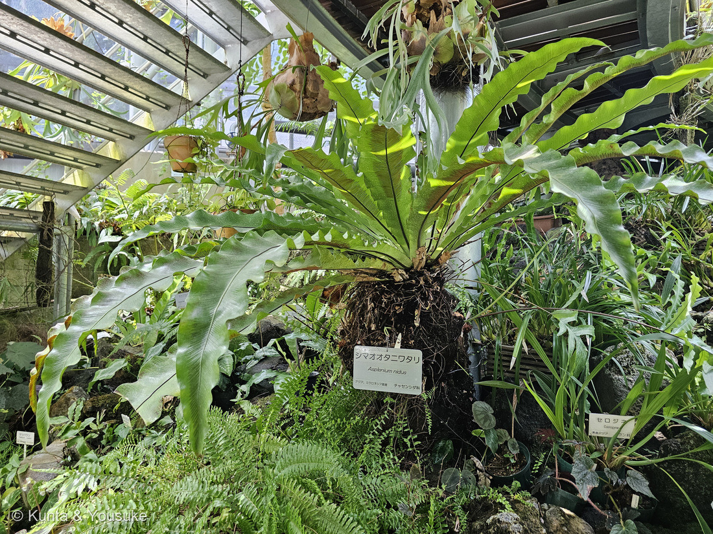
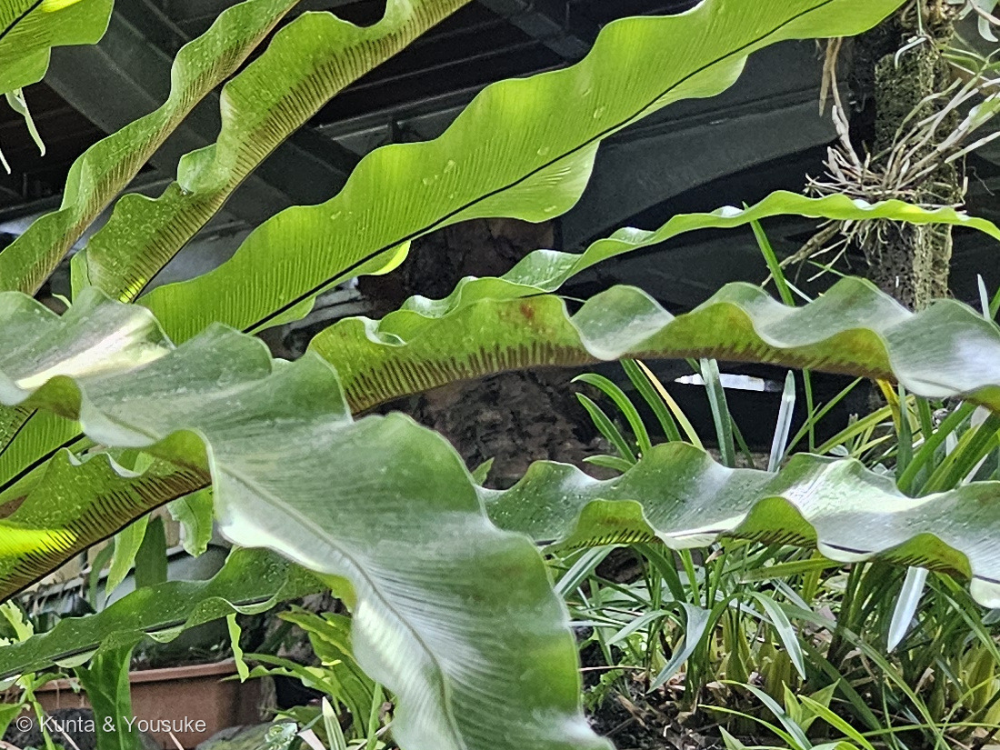
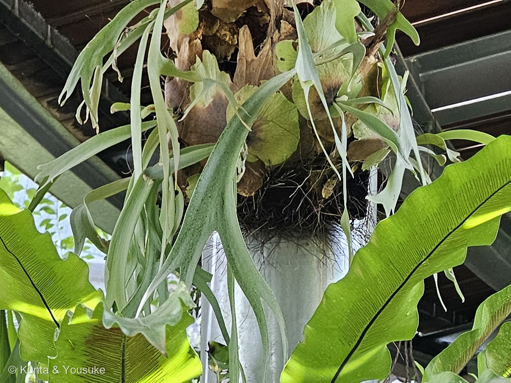
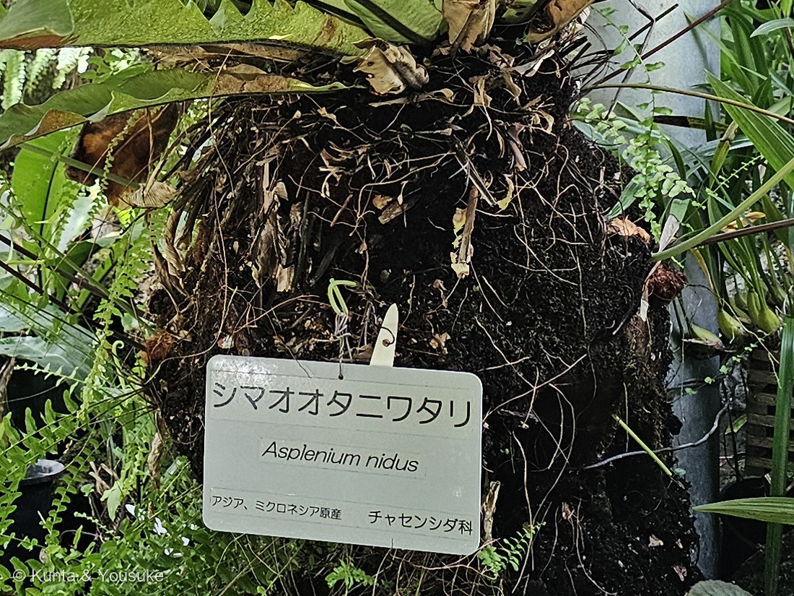

地図を読み込んでいるよ…
🔍 写真も地図も、押しているあいだ拡大して見られるよ（スマホは指を置いてすこし待ってね）。
🌍 の地図＝この子がもともと自生している場所を緑に。園の名札は「アジア、ミクロネシア原産」。読めた出典は、日本では小笠原諸島と南西諸島に、国外では東南アジアなどに分布し、熱帯・亜熱帯の雨林で樹木や岩の上に着生する、とする。くわしくは下の地図の説明を見てね。
⭐南の島と、東南アジアの雨林の子だよ＝園の名札は「アジア、ミクロネシア原産」とし、読めた出典は「日本では小笠原諸島と南西諸島、国外では東南アジアなどに分布し、熱帯・亜熱帯の雨林で樹木や岩に着生する」とする。⚠⚠ミクロネシアは塗れなかったよ＝ミクロネシア連邦・パラオ・グアム・北マリアナのコードが、この世界地図のデータに入っていないんだ（⭐275 アエオニウムのカーボベルデ、278 ヒドノフィツムのシンガポールに続いて3回目）。⚠そして日本の緑も、ほんとうよりずっと広く見えているよ＝東京都が丸ごと緑になっているけれど、実際は小笠原諸島だけ＝鹿児島県と沖縄県も、南西諸島のことだと思ってね（⭐276 マサキの北海道と同じことが起きている）。⭐東南アジアは、出典が国名まで書いていないので、インドネシア・マレーシア・フィリピン・タイ・ベトナムをぼくの見当で塗った。⭐⭐⭐そして、この緑でいちばん大事なのは「どこに」ではなく「どこで」暮らすかだと思う＝この子は地面ではなく、木の上や岩の上に着生する――⭐足もとに土がないから、長い葉を放射状に立ててまんなかをろうと状にくぼませ、そこに落ち葉を受けて養分にしているんだ（⭐本文の「1分のあいだに、3つの答えが並んでいた」の節を見てね）。⭐同じ温室で1分のあいだに撮られた249 ビカクシダと278 ヒドノフィツムも、やはり土のないところで暮らす子だよ＝⭐⭐3人が3通りのやりかたで、同じ問題を解いている。
⚠ 地図は国（日本と中国だけ県・省）までしか塗れないから、ほんとうの分布より広く見えていることがあるよ。地図はだいたいの場所。正確なところは、上の文を見てね。
シマオオタニワタリ（島大谷渡）
Asplenium nidus L.
種小名の意味 · ⭐⭐nidus＝ラテン語で「巣」 英名 Bird's nest fern（鳥の巣シダ） 別名 アスプレニウム・ニドゥス
チャセンシダ科 · Aspleniaceae（チャセンシダ属 Asplenium・ウラボシ目 Polypodiales）── ⭐⭐図鑑で105科目。チャセンシダ科ははじめて／⭐シダ植物としては4人目（230 デンジソウ・249 ビカクシダほか）
燻太さんの言葉「シマオオタニワタリっていう名前のシダ植物。チャセンシダ科に分類されるシダ植物みたいだよ。」「細かく分かれない、幅広い胞子葉だね。」── ⭐最後のひとことを、ひとつだけやさしく直させてね。そこから大きな話につながったよ
⭐⭐⭐ 名前と学名の由来 ── 「巣」という名前
- 学名は Asplenium nidus L.（リンネの命名）。⭐⭐種小名の nidus は、ラテン語で「巣」。──⭐英名の Bird's nest fern（鳥の巣シダ）と、まったく同じ見立てだね。
- ⭐写真①を見て。⭐⭐長い葉が、株の中心から放射状に立ち上がって、まんなかがろうと（漏斗）のようにくぼんでいる。──この形が、大きな鳥の巣に見えたんだ。
- 属名 Asplenium はチャセンシダ属。⭐和名の「チャセンシダ（茶筅羊歯）」は、葉の形をお茶をたてる茶筅に見立てたものとされるよ。
- 和名の「オオタニワタリ（大谷渡）」＝⭐「谷を渡る」ように、木から木へ着生して広がる姿からと言われる（⚠そう説明した出典を確かめきれなかったので、ここは断定しないでおくね）。⭐「シマ（島）」が付くのは、南の島に多いから＝⭐本家の「オオタニワタリ」は日本の暖地にいる別種だよ（おまけにしたよ）。
⭐⭐ この植物のこと
- ⭐⭐チャセンシダ科チャセンシダ属の常緑のシダ。この図鑑では105科目で、チャセンシダ科ははじめて。
- ⭐熱帯・亜熱帯の雨林で、樹木や岩の上に着生する。⭐短い塊状の根茎から、葉を放射状に出す（写真①④）。
- 葉は単葉で、長さ1m以上、幅12〜30cmの剣状の披針形。⭐燻太さんの言うとおり、細かく分かれない。
- ⭐胞子嚢群は、葉の裏の側脈にそって線状に並ぶ。⭐写真②で、褐色の線がずらりと並んでいるのが見えるよ。
- ⭐新芽は食用になるそうで、天ぷらやおひたしにされるという。
⚠ ひとつだけ、やさしく直させて ── 「胞子葉」のこと
- 燻太さんは、こう書いてくれた。──「細かく分かれない、幅広い胞子葉だね。」
- ⭐「細かく分かれない、幅広い」は、そのとおり。⭐そして「胞子をつける葉」であることも、正しい（写真②のとおり、この葉の裏に胞子嚢群がついている）。
- ⚠でも、「胞子葉」という呼びかたは、ちょっとだけちがうんだ。
⭐⭐「胞子葉」は、葉が2種類に分かれているシダで使う言葉なんだ。──胞子をつくる担当の葉（胞子葉）と、光合成だけをする葉（栄養葉）に、役割が分かれているとき。 - ⭐⭐⭐そして、この子は葉が1種類しかない。──どの葉も、光合成もするし、胞子もつける。⭐だから、呼び分ける相手がいないんだ。
- ⭐⭐⭐⭐でも、燻太さんがそう呼びたくなったのは、すごく自然だと思う。──だって、この写真のすぐ上に写っているのが、249 ビカクシダだから（写真③）。
⭐あの子は、葉がはっきり2種類に分かれている＝貯水葉は「植物体の基部を覆って腐葉を貯める働き」／胞子葉は「光合成と胞子生産を行って繁殖を受け持つ」。
⭐⭐249を見たすぐあとに、この葉を見たら、「これは胞子葉だ」と呼びたくなる。──⭐ぼくも、そう思ったよ。
⭐⭐⭐⭐⭐ 1分のあいだに、3つの答えが並んでいた
- ⭐撮影時刻を並べてみて、ぼくはちょっと鳥肌が立った。
- 11:49:53〜58 ＝ 249 ビカクシダ
- 11:50:15〜23 ＝ 278 ヒドノフィツム・フォルミカルム
- ⭐11:50:54 ＝ この子
- ⭐⭐⭐そして、この3人はみんな着生植物なんだ。──木の上や岩の上で暮らすということは、足もとに土がないということ。⭐土がなければ、水も養分もない。
- ⭐⭐⭐⭐⭐その同じ問題に、3人がまったくちがう答えを出していた。
- ⭐249 ビカクシダ＝葉を2種類に分けた。⭐茶色い貯水葉が株を抱いて、そこに落ち葉と水をためる。
- ⭐278 ヒドノフィツム＝幹をふくらませて、中にアリを住まわせた。⭐トンネルの内壁の腺が、アリの排泄物から養分を吸う。
- ⭐この子＝葉を分けないまま、並べかたで解いた。⭐⭐長い葉を放射状に立てて、まんなかをろうと状にくぼませる。そこに落ち葉が落ちてきて、たまって、腐って、養分になる。
- ⭐読めた出典は、こう書いていた。──「葉がお猪口型で、落ち葉をここに集めて、自分が成長するための肥料とするための適応と考えられます。」
- ⭐⭐⭐写真③を見てほしい。──上にビカクシダ、下にシマオオタニワタリ。⭐同じ問題への、ちがう2つの答えが、1枚の写真に上下で重なっている。
- ⭐⭐これは🧬 収れん・他人の空似の話だね。⚠でも、いつもの収れんとは少しちがう。──⭐いつもは「別の科が、同じ形にたどりついた」話だった。⭐⭐今回は「別の科が、同じ問題に、ちがう形で答えた」話。
⭐似ているから面白いんじゃなくて、ちがうから面白い。──⭐同じ困りごとの前で、生きものはひとつの答えに収れんするとはかぎらないんだ。
⚠ 同定について ── 測れなかったことも、書いておくね
- ⭐園の名札に「シマオオタニワタリ／Asplenium nidus」と書いてあるので、そこは確か。⚠でも、ぼくは自分でも確かめようとして、できなかった。
- ⭐オオタニワタリ（A. antiquum）とシマオオタニワタリを分ける決め手は、胞子嚢群の長さなんだ。
- オオタニワタリ＝中肋から葉の縁までの、3分の2以上まで伸びる
- シマオオタニワタリ＝半分以下で止まる
- ⚠⚠写真②で測ろうとしたけれど、うまくいかなかった。⭐理由は2つ＝①葉が斜めを向いている ②葉のふちが波打っている。──どちらも、見かけの幅を縮めてしまう。⭐目測では「半分から3分の2くらい」に見えたけれど、それでは決められない。
- ⭐だから、この形質での裏づけはできていない、と正直に書いておくね。⏳宿題にした＝⭐次に行ったら、平らに広がっている葉を、面に垂直な向きから撮ってきてほしい。⭐それができれば、比が出て、はっきりする。
出典：広島市植物公園の名札（「シマオオタニワタリ／Asplenium nidus／アジア、ミクロネシア原産／チャセンシダ科」。⭐解説文の無い短い名札なので、247の判定にしたがって写真④に残したよ）／植物図鑑・園芸情報など（チャセンシダ科チャセンシダ属の常緑シダで、英名は Bird's nest fern・日本では小笠原諸島や南西諸島、国外では東南アジアに分布し、熱帯・亜熱帯の雨林で樹木や岩上に着生する・短い塊状の根茎があり、多くの葉を放射状に出す・葉は単葉で長さ1m以上、幅12〜30cmの剣状の披針形・葉がお猪口型で、落ち葉をここに集めて、自分が成長するための肥料とするための適応と考えられる・胞子嚢群は葉の裏の側脈にそって線状に並び、ふつう主脈から葉の縁までの幅の半分以下・オオタニワタリは胞子嚢群が3分の2以上つくのに対し、シマオオタニワタリは半分くらいしかつかない・新芽は食用とされ、天ぷらやおひたしにされる）／⭐この図鑑の 249 ビカクシダのページ（貯水葉は「植物体の基部を覆って腐葉を貯める働き」／胞子葉は「光合成と胞子生産を行って繁殖を受け持つ」）／⭐この図鑑の 278 ヒドノフィツム・フォルミカルムのページ（着生植物で根もとに土がないため、幹の中にアリを住まわせ、その排泄物から養分を得る）